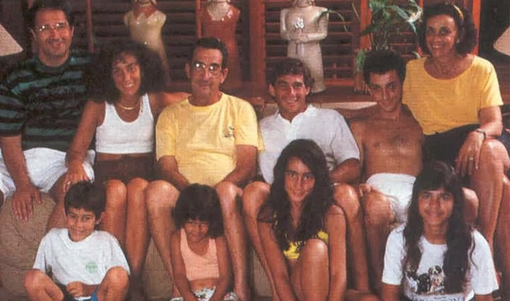

O começo de sua história no automobilismo

- Foi incentivado pelo pai, um entusiasta das competições automobilísticas, que montou o primeiro kart de Senna quando este tinha quatro anos, e que tinha um motor de máquina de cortar grama. Aos nove anos, já conduzia jipes pelas estradas dentro das propriedades rurais de Milton. Na televisão, gostava de assistir o anime Speed Racer, sobre um piloto de corridas.
- Começou a competir oficialmente nas provas de kart aos treze anos. A sua primeira vitória oficial aconteceu na primeira prova oficial no kart de que participou, em julho de 1973. Tal fato teve lugar no Kartódromo de Interlagos, que hoje leva seu nome. Ganhou seu primeiro campeonato em 1977, repetindo o feito em 1980.
- A conquista do seu primeiro título de campeão brasileiro de kart ocorreu em 16 de julho de 1978 no Kartódromo de Tarumã, em Viamão, na Grande Porto Alegre. Ayrton, com 18 anos na época, competiu pela equipe "Sulam" e venceu todas as provas, derrotando assim o seu maior rival Walter Travaglini.
- No mundial de kart realizado em 1979 em Estoril, Ayrton usou pela primeira vez o capacete amarelo que se tornou sua marca registrada nas pistas. A pintura foi feita por Sid Mosca. No entanto, como cada país tinha sua própria pintura, todos os competidores do Brasil usaram o mesmo layout, conforme exigia o regulamento da competição.